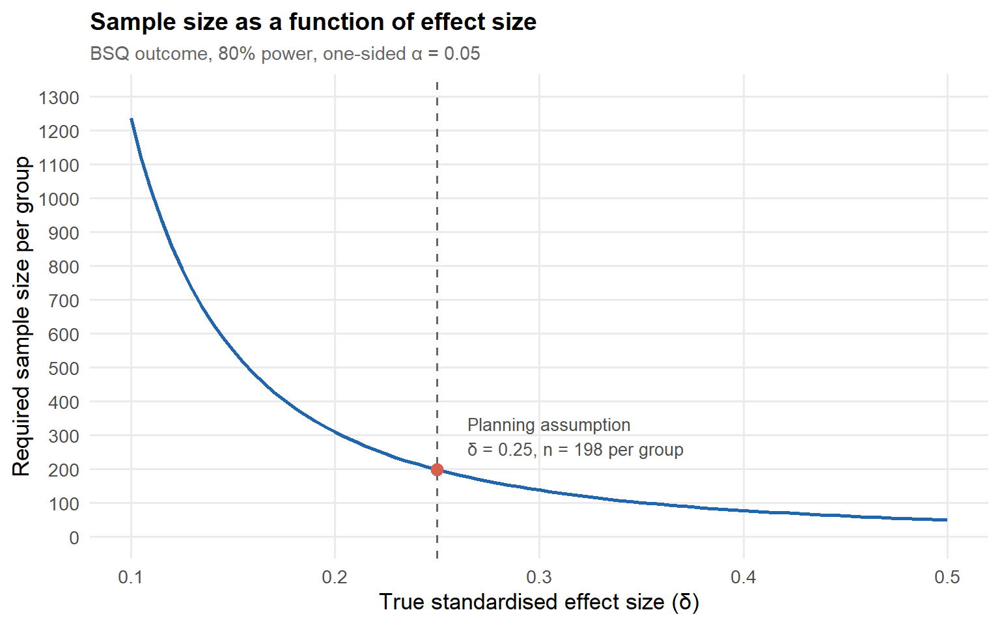
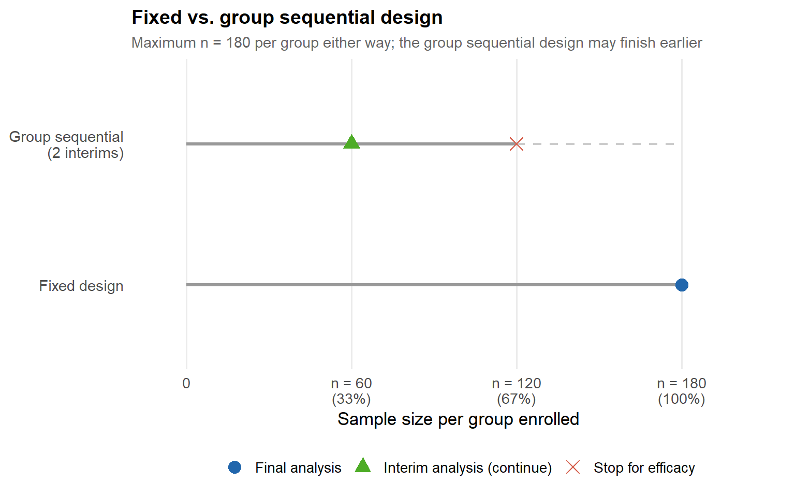
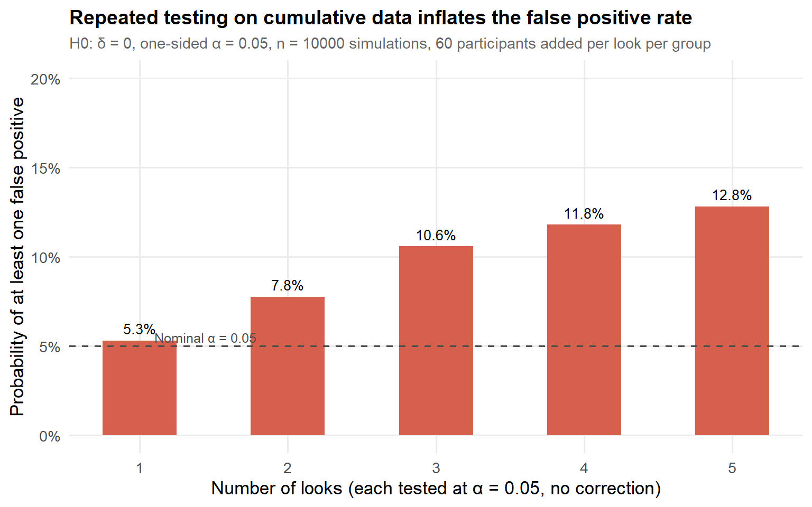
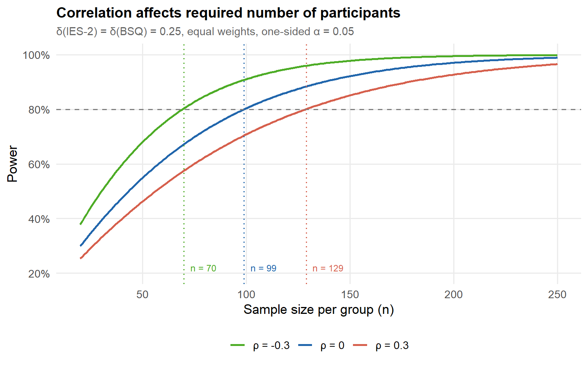
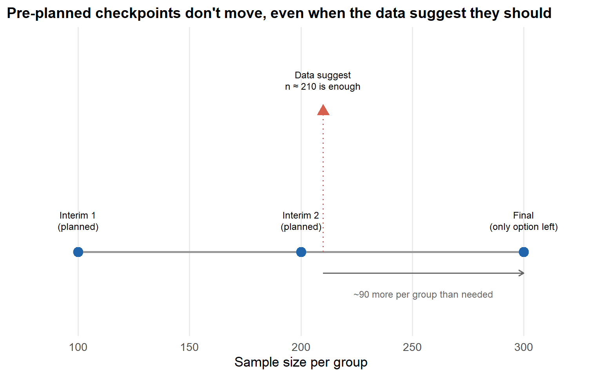

Effect size uncertainty is the rule, not the exception - Part 1: Sequential designs
Imagine you’re designing a study. You only have a vague idea about the effect size of interest. How do you compute how many participants to recruit?
sequential designs
multivariate
adaptive designs
sample size
r
Author
Xynthia Kavelaars
Published
July 29, 2026
💊 How to determine the sample size when the effect size is uncertain?
Imagine you’re designing a study. You only have a vague idea about the effect size of interest. How do you compute how many participants to recruit?
Sample size planning is a commitment made under uncertainty. You specify the effect you expect to find, and that expectation determines how many participants you need. The problem is that the effect is exactly what the study is designed to measure — it is never known in advance, only guessed.
When the guess is too optimistic, the study ends up underpowered: you reach your planned sample size without enough evidence to draw a firm conclusion. Or in a worse case: The effect is unexpectedly adverse potentially resulting in participants being harmed. When the guess is too pessimistic, the study is larger than it needed to be — participants, time, and money spent on precision you didn’t need. Sequential designs were developed to manage exactly this problem, by allowing the data themselves, collected as the study runs, to inform whether to stop early or continue.
This post explains the most common form of sequential design — the group sequential design — using a single running example throughout. By the end, hopefully you will understand what a group sequential design is, where it helps and where it doesn’t. That last point matters: the limitations of group sequential designs are exactly what motivate Part 2 of this blog, on sample size re-estimation.
ImportantThe core argument of this post
A fixed-sample design commits to one sample size based on one guess about the effect made before data collection started. A group sequential design keeps that same commitment to a maximum sample size, but adds pre-planned checkpoints at which the study can stop early — if the evidence at that checkpoint is strong enough to satisfy a stricter-than-usual threshold. That stricter threshold is the price paid for looking at the data more than once.
A running example: intuitive eating versus structured dietary rules
Throughout this post, one example carries the methodological discussion. A randomized controlled study compares two approaches to changing eating behaviour in adults with subclinical eating problems — problems that affect wellbeing and body image but do not meet criteria for a clinical eating disorder diagnosis. The two approaches focused on:
Intuitive eating programme: structured around recognising and responding to internal hunger and satiety cues, rejecting external dietary rules.
Structured dietary rules programme: a conventional, rule-based approach to eating behaviour (portion guidance, meal timing, food categorisation).
Body image (Body Shape Questionnaire, BSQ, reverse-scored here so that higher = better body image)
Both outcomes matter: a participant who improves their relationship with food without any change in body image has not achieved what the intervention is meant to achieve, and the reverse is also true. We will return to this multivariate structure later in the post. For now, the example also illustrates the basic sample size problem clearly enough on a single outcome, namely Body image.
The problem: a single guess determines the whole study
Suppose pilot data and prior literature suggest a standardised treatment difference on the BSQ of \(\delta = 0.25\), favouring the intuitive eating arm. A power analysis based on this single number determines the sample size. The figure below visualizes the required sample size per group as a function of the true effect size.
Show code
z_alpha <-qnorm(1-0.05) # one-sided alpha = 0.05z_beta <-qnorm(0.80) # 80% powerdelta_seq <-seq(0.10, 0.50, by =0.005)n_required <-ceiling(2* (z_alpha + z_beta)^2/ delta_seq^2)df_n <-data.frame(delta = delta_seq, n = n_required)planned_delta <-0.25planned_n <-ceiling(2* (z_alpha + z_beta)^2/ planned_delta^2)dev_delta <-c(0.15, 0.20, 0.35)dev_n <-ceiling(2* (z_alpha + z_beta)^2/ dev_delta^2)ggplot(df_n, aes(x = delta, y = n)) +geom_line(linewidth =1, color ="#2166ac") +geom_vline(xintercept = planned_delta, linetype ="dashed", color ="grey40") +geom_point(data =data.frame(delta = planned_delta, n = planned_n),size =3, color ="#d6604d" ) +annotate("text", x = planned_delta +0.015, y = planned_n +100,label =paste0("Planning assumption\nδ = 0.25, n = ", planned_n, " per group"),hjust =0, size =3.5, color ="grey30" ) +scale_y_continuous(limits =c(0, 1300), breaks =seq(0, 1300, 100)) +labs(title ="Sample size as a function of effect size",subtitle ="BSQ outcome, 80% power, one-sided α = 0.05",x ="True standardised effect size (δ)",y ="Required sample size per group" )

Figure 1: Required sample size per group as a function of the true standardised effect size.
The figure shows the problems that may arise under uncertainty about effect sizes. Let’s consider three situations:
If the true effect is \(\delta = 0.20\) rather than \(\delta = 0.25\), the required sample size rises by roughly 57% (\(n = 310\) vs. \(n = 198\)).
If the true effect is \(\delta = 0.15\), the difference is much larger (\(n = 550\) vs. $n = $ \(n = 198\)), leaving the probability of detecting a real effect far below the intended 80% and giving the treatment a limited chance to demonstrate superiority when the planning assumption of \(\delta = 0.25\) is used.
If the true effect is \(\delta = 0.35\), the planned sample is considerably larger than necessary (\(n = 101\) vs. \(n = 198\)) - wasting resources by including \(n = 97\) additional participants per group.
Given these large differences - especially apparent under small to medium effect sizes - precision in sample size estimation is necessary. But, anyone who has ever designed a study may also know that differentiating between effect sizes of \(0.15\), \(0.25%\), or \(0.35\) is usually difficult. Remember, if the researcher would be sure about the effect size up to this level of precision, the study would not be needed!
How a sequential design might help
A group sequential design has the potential to correct the sample size for an inadequately estimated effect size by monitoring interim data. There is more nuance to this, but let’s first explain in more detail what a group sequential design does. A group sequential design adds pre-planned interim analyses: specific, fixed points during recruitment at which the accumulated data are analyzed and a decision is made. For the intuitive eating study, suppose the maximum planned sample size is \(n = 180\) per group, with two interim analyses — at \(n = 60\) and \(n = 120\) per group — before the final analysis at \(n = 180\).
At each interim analysis, one of two decisions are made:
Continue the study: the evidence so far is not yet conclusive in either direction. Recruitment proceeds to the next pre-planned analysis point.
Stop the study: the evidence is already strong enough that continuing to recruit to the maximum sample size would be unlikely to change the interim conclusion, and would mean unnecessarily delaying participants in the (effective) control condition from accessing benefit, or unnecessarily exposing more participants to a study when the answer is already clear. studies can be stopped for efficacy when evidence strongly favors the treatment arm or for futility when early results reveal that the new treatment will not be better or that the study does harm to participants.
If data collection did not stop at interim, then data collection will be stopped at the maximum planned sample size.
NoteA note on efficacy and futility in one-sided and two-sided testing
It’s worth pausing on a detail that is easy to skip past: the test in this study is one-sided. We are testing whether intuitive eating produces more improvement than the dietary rules condition — not simply whether the two conditions differ in any direction (which would be a two-sided test). Whether one-sided testing is appropriate depends on whether a result in the other direction (here, dietary rules outperforming intuitive eating) is a result you would treat identically to “no difference” — i.e., you would not act any differently when dietary rules outperform intuitive eating compared to the situation where dietary rules and intuitive eating having comparable results. In a study where the intervention will only be adopted if it demonstrably outperforms the comparator, this is often defensible. It is a decision to make and justify explicitly at the design stage, not by default. There are more testing goals (e.g., equivalence, non-equivalence, non-superiority), that will be discussed in a later blog.
In case of two-sided testing, efficacy refers to any of the treatments being clearly better than the other at interim, while futility means that evidence is strong enough to safely conclude that no difference will be found with additional data.
Fixed versus group sequential, side by side
Show code
ggplot() +geom_segment(data =data.frame(x =0, xend =1, y =1, yend =1),aes(x = x, xend = xend, y = y, yend = yend),linewidth =1.2, color ="grey60" ) +geom_segment(data =data.frame(x =0, xend =2/3, y =2, yend =2),aes(x = x, xend = xend, y = y, yend = yend),linewidth =1.2, color ="grey60" ) +geom_segment(data =data.frame(x =2/3, xend =1, y =2, yend =2),aes(x = x, xend = xend, y = y, yend = yend),linewidth =0.8, color ="grey80", linetype ="dashed" ) +geom_point(data =data.frame(x =c(1, 1/3, 2/3),y =c(1, 2, 2),type =c("Final analysis", "Interim analysis (continue)", "Stop for efficacy") ),aes(x = x, y = y, color = type, shape = type),size =4 ) +scale_color_manual(values =c("Final analysis"="#2166ac","Interim analysis (continue)"="#4dac26","Stop for efficacy"="#d6604d" )) +scale_shape_manual(values =c("Final analysis"=16,"Interim analysis (continue)"=17,"Stop for efficacy"=4 )) +scale_x_continuous(breaks =c(0, 1/3, 2/3, 1),labels =c("0", "n = 60\n(33%)", "n = 120\n(67%)", "n = 180\n(100%)"),limits =c(-0.05, 1.15) ) +scale_y_continuous(breaks =c(1, 2),labels =c("Fixed design", "Group sequential\n(2 interims)"),limits =c(0.5, 2.5) ) +labs(title ="Fixed vs. group sequential design",subtitle ="Maximum n = 180 per group either way; the group sequential design may finish earlier",x ="Sample size per group enrolled",y =NULL, color =NULL, shape =NULL ) +theme(axis.text.y =element_text(size =11),panel.grid.major.y =element_blank())

Figure 2: Schematic comparison: a fixed design analyses once, at the planned maximum. A group sequential design analyses at pre-planned interims and may stop early if the efficacy boundary is crossed; here it stops at the second interim.
What stays the same between the two designs: the outcome measure, the decision rule for declaring benefit, the maximum sample size the study is powered for, and the randomisation procedure. What changes: the expected sample size (lower under the group sequential design when the treatment is genuinely effective, because the study can stop early) and the per-look significance threshold (stricter at interim analyses, as shown above).
Why a group sequential design must be designed carefully
There are many considerations in group sequential study design, but the most important one is inflation of the Type I error rate when performing multiple tests: You can’t just test repeatedly at α = 0.05 - while keeping the overall probability to incorrectly conclude superiority at α = 0.05 as well. Hence, if you want to draw a conclusion with a 5% Type I error probability from multiple analyses, the error rate for each individual interim analysis must be downward adjusted to keep an overall (= over the entire study) decision error rate of 5%.
Suppose, naively, you decided to analyze the intuitive eating study three times — at \(n = 60\), \(n = 120\), and \(n = 180\) per group — and declared “significant” any time \(p < 0.05\) at any of those three looks. What is the actual probability of declaring a significant effect at least once, purely by chance, if the true effect is exactly zero?
It is (much) larger than 5%. Each look is an opportunity for the data to randomly drift into significant territory, and the three opportunities are not independent of each other (the same accumulating data feed each test), but they are not fully redundant either. The result is a family-wise error rate — the probability of at least one false positive across the whole set of looks — that is inflated above the nominal 5%. The figure below shows how the Type I error rate rises per look in a simulation of 10,000 hypothetical studies with \(k=5\) interim analyses when repeatedly testing at the 5% error level.
Show code
n_sim <-10000n_per_look <-60# participants added per look, per groupmax_looks <-5alpha <-0.05fwer_cumulative <-numeric(max_looks)for (k inseq_len(max_looks)) { n_total <- n_per_look * k # total per group at the final look# Simulate full datasets under H0 (delta = 0, sd = 1) group_a <-matrix(rnorm(n_sim * n_total), nrow = n_sim, ncol = n_total) group_b <-matrix(rnorm(n_sim * n_total), nrow = n_sim, ncol = n_total)# At each look j, test on the first j * n_per_look columns any_sig <-logical(n_sim)for (j inseq_len(k)) { n_j <- j * n_per_look# Mean difference and pooled SE for each simulation mean_diff <-rowMeans(group_b[, 1:n_j, drop =FALSE]) -rowMeans(group_a[, 1:n_j, drop =FALSE]) se <-sqrt(2/ n_j) # sd = 1, two groups of n_j z_j <- mean_diff / se any_sig <- any_sig | (z_j >qnorm(1- alpha)) } fwer_cumulative[k] <-mean(any_sig)}df_fwer <-data.frame(looks =seq_len(max_looks),fwer = fwer_cumulative)ggplot(df_fwer, aes(x = looks, y = fwer)) +geom_col(fill ="#d6604d", width =0.5) +geom_hline(yintercept =0.05, linetype ="dashed", color ="grey30") +annotate("text", x =1.1, y =0.055,label ="Nominal α = 0.05",size =3.3, color ="grey30", hjust =0) +geom_text(aes(label = scales::percent(fwer, accuracy =0.1)),vjust =-0.6, size =3.5) +scale_y_continuous(labels = scales::percent_format(accuracy =1),limits =c(0, 0.20)) +scale_x_continuous(breaks =seq_len(max_looks)) +labs(title ="Repeated testing on cumulative data inflates the false positive rate",subtitle =paste0("H0: δ = 0, one-sided α = 0.05, n = ", n_sim," simulations, ", n_per_look, " participants added per look per group"),x ="Number of looks (each tested at α = 0.05, no correction)",y ="Probability of at least one false positive" )

Figure 3: Family-wise error rate when testing repeatedly at α = 0.05 on cumulative data under the null.
As you can see, the Type I error rate clearly exceeds the 5% level when each interim look tests at 5%.
ImportantThe multiple testing problem, in one sentence
Every additional look at accumulating data is an additional chance for noise to cross your significance threshold — so testing repeatedly at the same nominal \(\alpha\) inflates your true false-positive rate well above what you intended.
The solution: spending the error rate across looks
To prevent this so-called Type I error inflation, group sequential designs divide the total 5% budget over interim analyses and do so via a pre-specified rule for how much of the total 5% false-positive budget is “allowed” to be spent at each interim analysis. Goal is to keep the cumulative amount spent across all looks at 5%. Looking at the data more than once is still allowed — but each individual look is held to a stricter standard than it would be in a fixed-design study.
There are several rules to divide the error budget wisely/ These rules can spend very little of the error budget at early interims (when the data are sparsest and most prone to random fluctuation) and reserves most of it for later looks (e.g. the O’Brien-Fleming approach). In practice, this means: at an early interim, you need overwhelming evidence to stop; near the end, the threshold approaches the familiar fixed-design value. Another approach is to spend approximately equal amounts of the error budget at each look (e.g., the Pocock approach), giving each interim analysis the same criterium. The table below uses the gsDesign package to develop two group sequential trials:
Show code
library(gsDesign)library(knitr)gsd_obf <-gsDesign(k =3, test.type =1, alpha =0.05, beta =0.20,sfu = sfLDOF, timing =c(1/3, 2/3, 1))gsd_poc <-gsDesign(k =3, test.type =1, alpha =0.05, beta =0.20,sfu = sfLDPocock, timing =c(1/3, 2/3, 1))# Fixed-design n (gsDesign normalises to 1, so calculate directly)delta <-0.25n_fixed <-ceiling(2* (qnorm(0.95) +qnorm(0.80))^2/ delta^2)# n at each look = timing fraction * n_fixed# Maximum n for a group sequential design is slightly larger than n_fixed because the# inflation from interim looks requires a small sample size increasen_obf <-ceiling(gsd_obf$timing * n_fixed / gsd_obf$timing[3])n_poc <-ceiling(gsd_poc$timing * n_fixed / gsd_poc$timing[3])# gsd$timing[3] == 1 always, but written explicitly for clarity# Maximum n per groupn_max_obf <- n_obf[3]n_max_poc <- n_poc[3]# Expected n under H1 (theta[2] = noncentrality under H1)en_obf <-ceiling(gsd_obf$en[2] * n_fixed)en_poc <-ceiling(gsd_poc$en[2] * n_fixed)# p-value thresholdsp_obf <-pnorm(gsd_obf$upper$bound, lower.tail =FALSE)p_poc <-pnorm(gsd_poc$upper$bound, lower.tail =FALSE)# Stopping probabilities under H1 (column 2)stop_obf <- gsd_obf$upper$prob[, 2]stop_poc <- gsd_poc$upper$prob[, 2]# Cumulative stopping probabilitycumstop_obf <-cumsum(stop_obf)cumstop_poc <-cumsum(stop_poc)fmt_p <-function(p) paste0("p < ", formatC(p, format ="f", digits =4))fmt_pct <-function(x) paste0(round(x *100, 1), "%")df_tbl <-data.frame(Analysis =c(paste0("Look 1 (n = ", n_obf[1], " / ", n_poc[1], ")"),paste0("Look 2 (n = ", n_obf[2], " / ", n_poc[2], ")"),paste0("Final (n = ", n_obf[3], " / ", n_poc[3], ")"),"Maximum n per group","Trials stopping at look 1","Trials stopping at look 2","Trials stopping at final","Trials stopping before maximum n" ),Fixed =c("—", "—", "p < .050",as.character(n_fixed),"—", "—", "100%", "0%"),OBF =c(fmt_p(p_obf[1]), fmt_p(p_obf[2]), fmt_p(p_obf[3]),as.character(n_max_obf),fmt_pct(stop_obf[1]),fmt_pct(stop_obf[2]),fmt_pct(stop_obf[3]),fmt_pct(cumstop_obf[2])),Pocock =c(fmt_p(p_poc[1]), fmt_p(p_poc[2]), fmt_p(p_poc[3]),as.character(n_max_poc),fmt_pct(stop_poc[1]),fmt_pct(stop_poc[2]),fmt_pct(stop_poc[3]),fmt_pct(cumstop_poc[2])))kable(df_tbl,col.names =c("", "Fixed design", "O'Brien-Fleming (increasing alpha)", "Pocock (similar alpha)"),align =c("l", "c", "c", "c"))
Table 1: Stopping thresholds and sample sizes for two group sequential designs versus a fixed design. The group sequential designs have 3 looks at 33%, 67%, and 100% of maximum n, one-sided α = 0.05, 80% power, δ = 0.25.
Fixed design
O’Brien-Fleming (increasing alpha)
Pocock (similar alpha)
Look 1 (n = 66 / 66)
—
p < 0.0007
p < 0.0226
Look 2 (n = 132 / 132)
—
p < 0.0161
p < 0.0231
Final (n = 198 / 198)
p < .050
p < 0.0451
p < 0.0238
Maximum n per group
198
198
198
Trials stopping at look 1
—
4%
32.8%
Trials stopping at look 2
—
42.5%
28.9%
Trials stopping at final
100%
33.5%
18.3%
Trials stopping before maximum n
0%
46.5%
61.7%
Both group sequential designs require a substantially stricter p-value threshold at early interim analyses than the familiar p < .05, but in different ways. O’Brien-Fleming spends almost nothing early (p < .0007 at look 1) and reserves most of the budget for the final analysis, while Pocock distributes the budget more evenly — resulting in a moderate threshold at every look, but one that is stricter than .05 even at the end. In return for these stricter thresholds, both designs offer the possibility of stopping early: If the treatment truly works (δ = 0.25), roughly 43% of O’Brien-Fleming trials stop at the second interim and never reach the maximum sample size, while Pocock trials stop even more often at the first interim (33%) due to its less conservative early threshold. The cost of this flexibility is modest: the maximum sample size under both designs can be slightly larger than the fixed-design equivalent (although this is not the case in this design).
When the effect size is estimated incorrectly
When the true effect turns out to be larger than assumed at the design stage — here δ = 0.30 instead of the planned δ = 0.25 — a fixed design simply runs to its pre-planned maximum sample size and finishes with higher power than intended, having recruited more participants than strictly necessary. A group sequential design responds to the stronger signal automatically. Because the data cross the stopping boundary earlier, a larger proportion of trials stop at the first or second interim, well before the maximum sample size is reached. The boundaries themselves do not change, but the probability of crossing them sooner increases when the effect is larger. This is exactly the scenario where a group sequential design pays off most directly by letting the pre-planned rules do their job when the evidence arrives faster than expected. Again, percentages of stopped trials per interim analysis are shown in the table below:
Show code
library(gsDesign)library(knitr)# Design based on assumed delta = 0.25 (unchanged)gsd_obf <-gsDesign(k =3, test.type =1, alpha =0.05, beta =0.20,sfu = sfLDOF, timing =c(1/3, 2/3, 1))gsd_poc <-gsDesign(k =3, test.type =1, alpha =0.05, beta =0.20,sfu = sfLDPocock, timing =c(1/3, 2/3, 1))delta_assumed <-0.25delta_true <-0.30n_fixed <-ceiling(2* (qnorm(0.95) +qnorm(0.80))^2/ delta_assumed^2)n_obf <-ceiling(gsd_obf$timing * n_fixed)n_poc <-ceiling(gsd_poc$timing * n_fixed)# Noncentrality parameter for true delta# theta = delta / sqrt(2/n) = delta * sqrt(n/2), but gsDesign uses# theta on the scale of the drift parameter: theta = delta * sqrt(n_fixed / 2)theta_true_obf <- delta_true *sqrt(n_fixed /2)theta_true_poc <- delta_true *sqrt(n_fixed /2)# gsProbability: compute stopping probs under a different thetaprob_obf <-gsProbability(k =3,theta =c(0, theta_true_obf),n.I = gsd_obf$n.I,a =rep(-20, 3),b = gsd_obf$upper$bound)prob_poc <-gsProbability(k =3,theta =c(0, theta_true_poc),n.I = gsd_poc$n.I,a =rep(-20, 3),b = gsd_poc$upper$bound)# Stopping probs under true delta (column 2)stop_obf <- prob_obf$upper$prob[, 2]stop_poc <- prob_poc$upper$prob[, 2]cumstop_obf <-cumsum(stop_obf)cumstop_poc <-cumsum(stop_poc)# Expected n under true deltaen_obf_true <-ceiling(sum(prob_obf$en[2] * n_fixed))en_poc_true <-ceiling(sum(prob_poc$en[2] * n_fixed))# Fixed design: planned for n=198, but true effect is larger so power > 80%power_fixed_true <-power.t.test(n = n_fixed, delta = delta_true,sd =1, sig.level =0.05,alternative ="one.sided")$powerfmt_p <-function(p) paste0("p < ", formatC(p, format ="f", digits =4))fmt_pct <-function(x) paste0(round(x *100, 1), "%")p_obf <-pnorm(gsd_obf$upper$bound, lower.tail =FALSE)p_poc <-pnorm(gsd_poc$upper$bound, lower.tail =FALSE)df_tbl <-data.frame(Analysis =c(paste0("Look 1 (n = ", n_obf[1], " / ", n_poc[1], ")"),paste0("Look 2 (n = ", n_obf[2], " / ", n_poc[2], ")"),paste0("Final (n = ", n_obf[3], " / ", n_poc[3], ")"),"Maximum n per group","Power at true δ = 0.30","Trials stopping at look 1","Trials stopping at look 2","Trials stopping at final","Trials stopping before maximum n" ),Fixed =c("—", "—", "p < .050",as.character(n_fixed),fmt_pct(power_fixed_true),"—", "—", "100%", "0%" ),OBF =c(fmt_p(p_obf[1]), fmt_p(p_obf[2]), fmt_p(p_obf[3]),as.character(n_obf[3]),"—",fmt_pct(stop_obf[1]),fmt_pct(stop_obf[2]),fmt_pct(stop_obf[3]),fmt_pct(cumstop_obf[2]) ),Pocock =c(fmt_p(p_poc[1]), fmt_p(p_poc[2]), fmt_p(p_poc[3]),as.character(n_poc[3]),"—",fmt_pct(stop_poc[1]),fmt_pct(stop_poc[2]),fmt_pct(stop_poc[3]),fmt_pct(cumstop_poc[2]) ))kable(df_tbl,col.names =c("", "Fixed design","O'Brien-Fleming", "Pocock"),align =c("l", "c", "c", "c"))
Table 2: What happens when the true effect (δ = 0.30) is larger than assumed at the design stage (δ = 0.25). Boundaries are unchanged; stopping probabilities reflect the true effect.
Fixed design
O’Brien-Fleming
Pocock
Look 1 (n = 66 / 66)
—
p < 0.0007
p < 0.0226
Look 2 (n = 132 / 132)
—
p < 0.0161
p < 0.0231
Final (n = 198 / 198)
p < .050
p < 0.0451
p < 0.0238
Maximum n per group
198
198
198
Power at true δ = 0.30
90.9%
—
—
Trials stopping at look 1
—
7.2%
44.7%
Trials stopping at look 2
—
55.5%
32%
Trials stopping at final
100%
28.3%
14.7%
Trials stopping before maximum n
0%
62.7%
76.7%
Why multiple outcomes raise the stakes
Everything so far has used the BSQ as if it were the only outcome. The study, recall, has two: IES-2 (intuitive eating) and BSQ (body image). With two outcomes, the analysis needs a rule for what joint pattern of results counts as a successful study outcome. Three common options:
All rule: the intervention must show benefit on both outcomes.
Any rule: benefit on at least one outcome is sufficient.
Compensatory rule: a weighted combination of the two outcomes must exceed a threshold — strong improvement on one outcome can offset a smaller improvement on the other.
The power of multivariate decisions depends not only on the two effect sizes but on the correlation between the outcomes, \(\rho\). This correlation is itself a planning assumption, and like the effect size, it is uncertain. Thus, rather than one single effect size in a univariate decision, we have three parameters to estimate prior to data collection in a multivariate analysis with two outcomes:
two effect sizes: one for each outcome
one correlation: one for each pair of outcome variables
The correlation is not a parameter to be ignored. In the figure below, the effect of the correlation on power is shown under the compensatory decision rule with equal weights.
Show code
power_compensatory <-function(n, delta1, delta2, rho, w1 =0.5, w2 =0.5,alpha =0.05) { ncp <- (w1 * delta1 + w2 * delta2) *sqrt(n /2) var_comp <- w1^2+ w2^2+2* w1 * w2 * rho ncp_std <- ncp /sqrt(var_comp) z_crit <-qnorm(1- alpha)pnorm(ncp_std - z_crit)}n_vals <-seq(20, 250, by =1)rho_vals <-c(-0.30, 0, 0.30)power_df <-expand.grid(n = n_vals, rho = rho_vals)power_df$power <-mapply(power_compensatory, n = power_df$n, rho = power_df$rho,MoreArgs =list(delta1 =0.25, delta2 =0.25,w1 =0.5, w2 =0.5, alpha =0.05))power_df$rho_label <-paste0("ρ = ", power_df$rho)power_df$rho_label <-factor(power_df$rho_label,levels =c("ρ = -0.3", "ρ = 0", "ρ = 0.3"))# n nodig voor 80% power per rho, voor annotatiesn_80 <-sapply(rho_vals, function(r) {min(n_vals[power_df$power[power_df$rho == r] >=0.80])})ggplot(power_df, aes(x = n, y = power, color = rho_label, group = rho_label)) +geom_line(linewidth =1) +geom_hline(yintercept =0.80, linetype ="dashed", color ="grey50") +geom_vline(xintercept = n_80, linetype ="dotted",color =c("#4dac26", "#2166ac", "#d6604d")) +annotate("text", x = n_80 +3, y =0.22,label =paste0("n = ", n_80),color =c("#4dac26", "#2166ac", "#d6604d"),hjust =0, size =3.2) +scale_color_manual(values =c("#4dac26", "#2166ac", "#d6604d")) +scale_x_continuous(breaks =seq(0, 250, by =50)) +scale_y_continuous(labels = scales::percent_format(accuracy =1),limits =c(0.20, 1.0)) +labs(title ="Correlation affects required number of participants",subtitle ="δ(IES-2) = δ(BSQ) = 0.25, equal weights, one-sided α = 0.05",x ="Sample size per group (n)",y ="Power",color =NULL )

Figure 4: Required sample size per group for 80% power under the compensatory decision rule, for three values of the outcome correlation.
As we can see, the correlation does affect the required sample size:
If the planning assumption of \(\rho = 0.30\) is correct, \(n = 129\) per group achieves approximately 80% power.
If outcomes are uncorrelated (\(\rho = 0.00\)), fewer respondents are needed: \(n = 99\) per group.
If the true correlation turns out to be negative - \(\rho = -0.30\) in this case — \(n = 70\) already suffices.
Thus, the correlation between outcomes should not be ignored in multivariate study planning. And, it is more complex: Be aware that other decision rules have other relations between correlation and power (see this blogpost for an intuition)!
NoteCorrelation is a planning assumption too
With a single outcome, interim monitoring informs you about one unknown: the treatment effect. With multiple outcomes, it informs you about several unknowns at once — each effect and the correlation structure between them. This is precisely why flexibility matters more, not less, once a study has more than one outcome: There are simply more places for the planning assumptions to be wrong.
What sequential monitoring costs: a small bias
A treatment effect that triggers early stopping is, on average, slightly overestimated. This happens because stopping occurs precisely when the interim estimate is large enough to cross the boundary — and estimates that happen to be large at an early interim are not representative of the true effect; some of that apparent size is just favourable noise. Pooling “stopped early” studies with “ran to completion” studies therefore inflates the average estimate.
For a design like the one used here — two interims — this bias is typically modest. It is not large enough to undermine the conclusion that a true effect exists, but it does mean that the point estimate of that effect from a study that stopped early should not be taken entirely at face value, particularly if that estimate is then used to plan a follow-up study.
Where group sequential designs run out of flexibility
It is worth being precise here, because this is sometimes misunderstood: group sequential designs can accommodate an effect that turns out to be smaller than planned. If the interim boundaries are not crossed, the study simply continues to its pre-planned maximum sample size — and in some group sequential design implementations, an additional, originally unplanned final look can even be added if the accumulating evidence suggests it would be informative. A group sequential design is not incapable of dealing with a disappointing effect size.
What it cannot do is adjust precisely. The interim analysis points and their boundaries are fixed before the study starts. Suppose the intuitive eating study had been planned with interims at \(n = 100\), \(n = 200\), and \(n= 300\) per group, and at the second interim the data suggest that only \(n \approx 210\) would actually be needed for adequate power. The design offers no mechanism to stop there. The next available analysis point is the one fixed in advance — \(n = 300\) — which means recruiting roughly 90 more participants per group than the data, at that point, suggest are necessary.
Show code
rigidity_df <-data.frame(x =c(100, 200, 210, 300),y =c(0, 0, 1, 0),label =c("Interim 1\n(planned)", "Interim 2\n(planned)","Data suggest\nn ≈ 210 is enough", "Final\n(only option left)"),type =c("planned", "planned", "suggested", "planned"))ggplot(rigidity_df, aes(x = x, y = y)) +geom_segment(aes(x =100, xend =300, y =0, yend =0),linewidth =1, color ="grey60") +geom_point(data =subset(rigidity_df, type =="planned"),aes(x = x, y = y), size =4, color ="#2166ac" ) +geom_point(data =subset(rigidity_df, type =="suggested"),aes(x = x, y = y), size =4, color ="#d6604d", shape =17 ) +geom_segment(data =subset(rigidity_df, type =="suggested"),aes(x = x, xend = x, y =0, yend =1),linetype ="dotted", color ="#d6604d" ) +geom_text(aes(label = label), vjust =-1.2, size =3.2, lineheight =1.0) +geom_segment(aes(x =210, xend =300, y =-0.15, yend =-0.15),arrow =arrow(length =unit(0.2, "cm")), color ="grey40" ) +annotate("text", x =255, y =-0.30, label ="~90 more per group than needed",size =3.2, color ="grey40") +scale_y_continuous(limits =c(-0.5, 1.5)) +scale_x_continuous(limits =c(80, 320)) +labs(title ="Pre-planned checkpoints don't move, even when the data suggest they should",x ="Sample size per group",y =NULL ) +theme(axis.text.y =element_blank(), axis.ticks.y =element_blank(),panel.grid.major.y =element_blank())

Figure 5: Illustration of group sequential design rigidity: pre-planned interim points (n = 100, 200, 300) do not align with the sample size the interim data actually suggest is needed (≈ 210). The study must continue to the next fixed checkpoint regardless.
This is the precise limitation that motivates sample size re-estimation. Rather than fixing both the timing and the boundaries of every look in advance, SSR allows the maximum sample size to be recalculated based on what the interim data show — landing closer to \(n = 210\) rather than being forced to either an insufficient \(n = 200\) or an excessive \(n = 300\).
Summary
NoteWhat a group sequential design offers
Early stopping for efficacy when the evidence is already strong
Formal control of the overall false-positive rate via a spending function, despite looking at the data more than once
No change to the maximum sample size the study is powered for — which makes it easier to justify and pre-register than more flexible designs
ImportantWhat it does not offer
Precise adjustment of sample size between pre-planned checkpoints — if the true effect requires something between two planned interims, the study must continue past the point where the data say it could stop
Genuine flexibility when initial planning assumptions — about the effect size or, in the multivariate case, the correlation between outcomes — turn out to be substantially wrong in the pessimistic direction
Coming up in Part 2
Part 2 turns to sample size re-estimation: designs that revise the maximum sample size itself, based on interim data, rather than choosing from a small set of pre-planned checkpoints. This solves the rigidity problem illustrated above — but introduces new challenges as well.
NoteA few last words on group sequential designs
It’s worth placing group sequential designs in the broader landscape. Adaptive design is an umbrella term for any study design that allows planned modifications based on accumulating data. This can include not just stopping decisions, but might be the allocation ratio between arms, the maximum sample size itself, eligibility criteria, covariates, or even the set of outcomes being monitored.
A group sequential design is one specific member of that family, where everything about the adaptation is fixed in advance: the number of interim looks, their exact timing (in terms of sample size), and the stopping boundaries at each one. The only thing that is not fixed in advance is whether the study actually reaches each subsequent look or stops earlier.
Other forms of adaptive design might relax more of these constraints. Sample size re-estimation — the subject of Part 2 — is such a design, allowing the maximum sample size itself to be revised based on interim data, rather than fixed at the outset. That is a meaningfully larger degree of flexibility, and it comes with its own statistical challenges, which is why it gets a dedicated post.
Elaborate (non open-access!) book: Jennison, C. & Turnbull, B. (2025). Group sequential and adaptive methods for clinical trials. Chapman and Hall/CRC.
Technical paper: Kavelaars, X., Mulder, J. & Kaptein, M. (2020). Decision-making with multiple correlated binary outcomes in clinical trials. Statistical Methods in Medical Research. https://doi.org/10.1177/0962280220922256
Non-technical book chapter: Kavelaars, X. (2020). Going multivariate in clinical trial studies: A Bayesian framework for multiple binary outcomes. Routledge. https://doi.org/10.4324/9780429273872
Questions? Any references that should be included as well? Found this useful? I’m on social media and happy to discuss!
This post was developed in collaboration with Claude (Anthropic). Claude contributed to drafting and revising the text, and generated the R code used to produce the figures, based on an iterative exchange about content, framing, and design. The running example, the technical content, and all final editorial decisions are my own.
Citation
BibTeX citation:
@online{kavelaars2026,
author = {Kavelaars, Xynthia},
title = {Effect Size Uncertainty Is the Rule, Not the Exception -
{Part} 1: {Sequential} Designs},
date = {2026-07-29},
url = {https://xynthiakavelaars.github.io/OpenInferenceLab/posts/2026-07-group-sequential-designs/},
langid = {en}
}